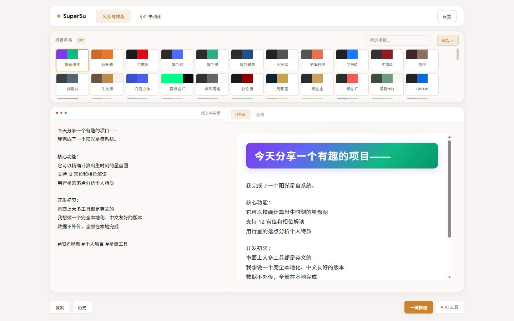
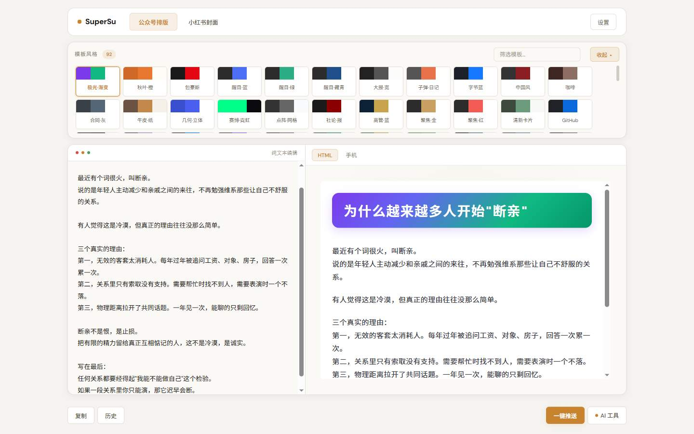
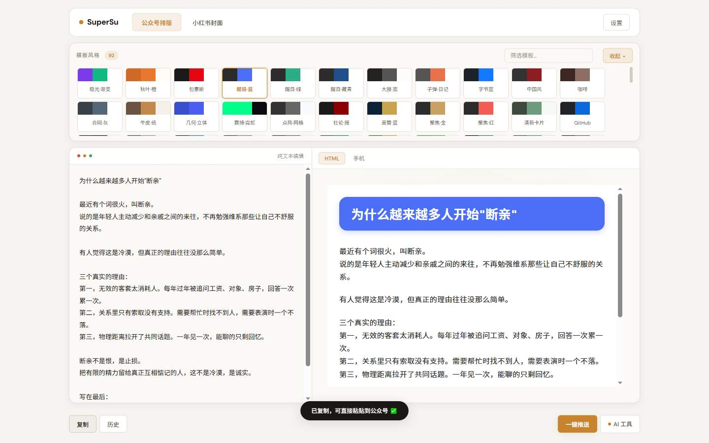
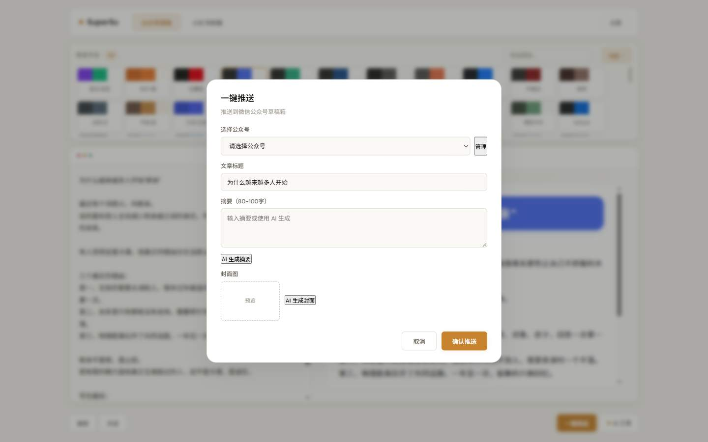
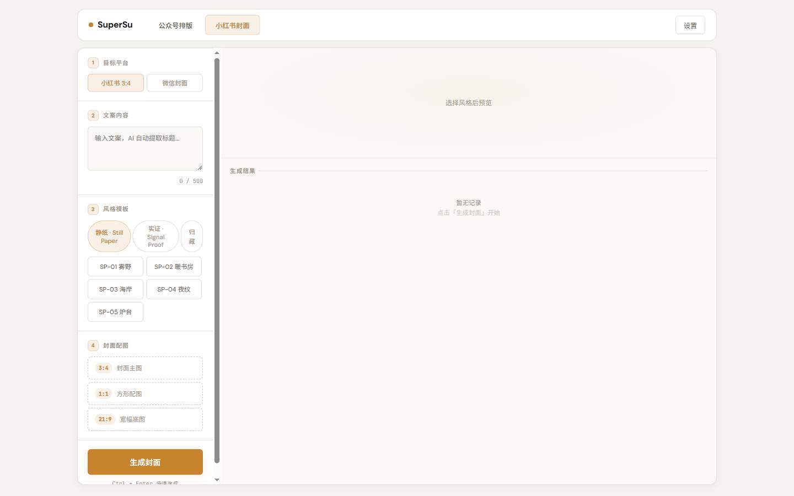
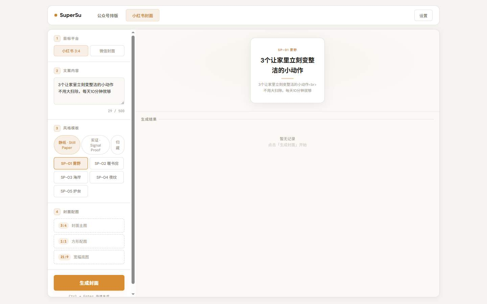
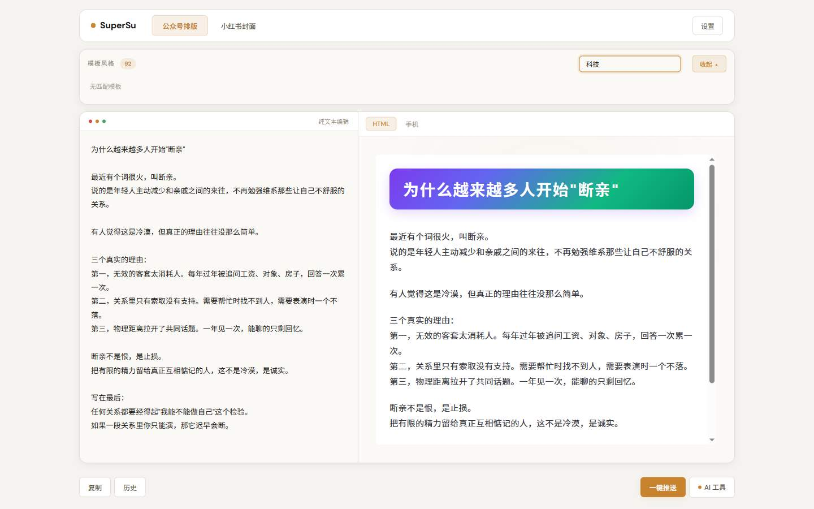
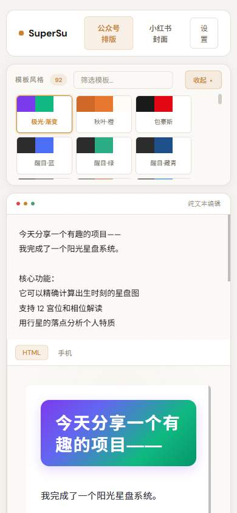
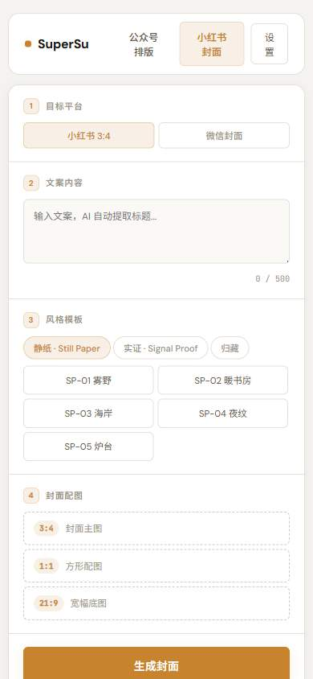
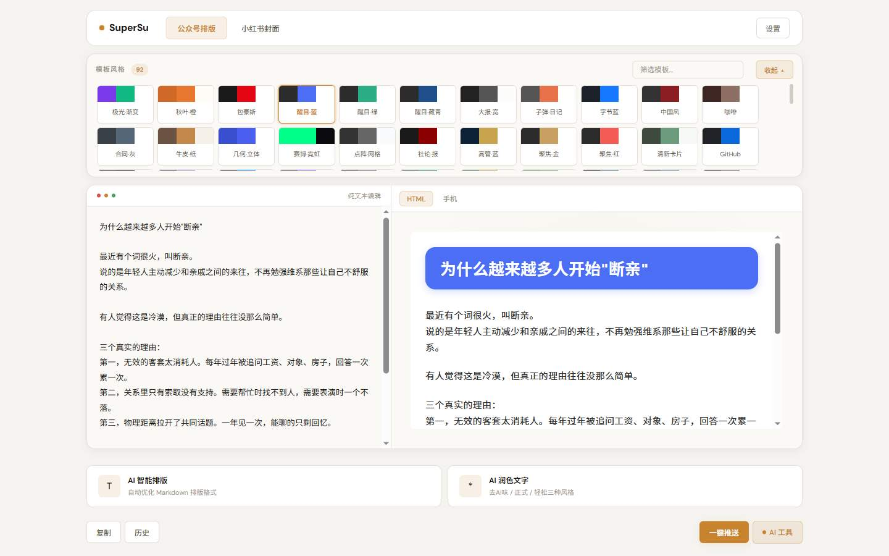

SuperSu 前端体验诊断与优化方案
用一把最朴素的尺子量它：一个完全不懂技术的人，能不能顺畅地把一篇文章变成好看的公众号排版？
方法：用真实浏览器（有头 Chrome）按用户路径走了一遍，15 个关键节点逐一截图。
一句话诊断：这产品的底子其实很好——排版效果漂亮、能一键复制、还能自动生成封面。 但它像一位不会带路的高手：进门没有指示牌，最该点的按钮不够显眼，让它干活时又不吭声，偶尔交出来的封面还有瑕疵。
要做的不是重做，而是"补带路 + 补反馈 + 修瑕疵"这三件事。
01我怎么走的（走查方式）
不看代码、只当用户。用真实浏览器走完这条路径，每个关键画面都截了图：
打开页面 → 粘贴一篇文章 → 找模板 → 换风格 → 点复制 → 看推送弹窗 → 切到小红书页 → 填文案 → 选风格 → 点生成封面 → 等结果 → 再打开手机尺寸看一遍
走查中实测到的硬数据（这些是后面判断的依据）：
- 公众号主题共 92 套，一屏排开、没有分类，也没有"推荐"。
- 在模板搜索框输入 「科技」→ 返回 0 个结果，页面只留一句"无匹配模板"，没有救场入口。
- 点击"生成封面"后，按钮文字毫无变化，也没有转圈或"生成中"提示（实际要等十几秒以上）。
- 封面共生成 3 张，但其中文字出现 溢出、重叠，甚至把
<br>标签原样显示了出来。 - 底图署名写着：
底图来源：local，紧跟一句"关键词…自动联网搜索"——前后自相矛盾。 - 手机尺寸下页面没有横向错位（这点没问题），但顶栏文字被挤成了两行。
02现状走查结论（看图说话）
① 第一眼：左侧有示例、右侧有成品——但没人告诉你"该干嘛"

新人进来会懵：右边这一大片彩色排版，是我做好的？还是我能改的？我第一步到底点哪？整屏没有一句"第一步…第二步…"的说明。
② 粘贴文章后：右侧自动排版——这是产品最好的一面

③ 点"复制"：反馈很清楚（值得保留）

④ 点"一键推送"：表格要填的东西不少，而且有前置门槛

问题不在功能本身，而在于它和"复制"并排放在最显眼处。多数人只是想复制走，一眼看到最扎眼的橙按钮，点进去却发现要配置账号、写摘要——劝退。
⑤ 小红书页首屏：右半边空空如也

用户根本不知道成品长什么样，对着空白没信心开始。
⑥ 点了"生成封面"之后：它一声不吭

<br>。用户会以为"没点到""是不是坏了"，于是反复点击。而实际上它正在后台忙十几秒。
⑦ 生成结果：封面文字"出洋相"了

这是最该优先修的问题：核心产出物的质量不过关，辛苦生成的封面用不了。
⑧ 搜索"科技"：直接把人晾在原地

⑨ 手机上看：顶栏被挤成两行


03问题清单（按轻重分级）
| 级别 | 问题（现象） | 在哪 | 为什么让"不懂技术的人"难受 |
|---|---|---|---|
| P0 | 封面文字排版崩坏：字号不自适应导致溢出、截断、文字重叠；换行符 <br> 被原样显示 | 小红书页 · 生成结果（图⑥⑦） | 辛苦生成的作品不能用，等于白做——这是最伤信任的问题 |
| P0 | 生成封面没有进度反馈：按钮文字不变、无转圈，实际要等十几秒 | 小红书页 · 生成按钮（图⑥） | 人以为坏了、会反复点，甚至关掉页面 |
| P0 | 首屏没有"三步走"引导：进门看到满屏内容，不知道先干嘛 | 公众号页 · 首屏（图①） | 新用户 5 秒内没方向就容易直接走人 |
| P0 | 最重要的按钮不显眼：核心"复制"是浅色次要按钮，进阶的"一键推送"却是最抢眼橙色主按钮 | 公众号页 · 底部操作栏（图①②） | 主次颠倒，把人往"更麻烦、有门槛"的路带 |
| P0 | 模板一锅端 + 搜索形同虚设：92 套无分类，搜"科技"返回 0 且无救场 | 公众号页 · 模板条（图①⑧） | 选择瘫痪（看花眼），或被空结果劝退 |
| P1 | 编辑框预置一整篇示例文章：要自己先删干净，且一聚焦示例就消失、想参考又找不到了 | 公众号页 · 左侧编辑区（图①） | 多了一步"删示例"，还容易把示例和正文搞混 |
| P1 | 小红书页右侧大片空白，没有成品示例 | 小红书页 · 首屏（图⑤） | 不知道能做出什么，缺"试试看"的动力 |
| P1 | 风格标签竖排错乱、名字看不懂："静纸 · Still Paper""SP-01 普野" | 小红书页 · 风格区（图⑤） | 中英混排 + 代号，像在看说明书 |
| P1 | 底图署名自相矛盾："来源 local" + "自动联网搜索" | 小红书页 · 结果区 | 前后不一致会让人怀疑"到底搜没搜" |
| P1 | 界面用词太专业："纯文本读稿""目标平台""封面配图""风格模板" | 两个页面 | 非技术用户要先"翻译"这些词才能操作 |
| P1 | 手机端顶栏挤成两行，且手机上没有预览区 | 手机尺寸（图⑨） | 小屏体验将就，看不方便 |
| P2 | "AI 智能排版"与核心"排版"撞名，分不清区别 | 公众号页 · AI 面板（见下图） | T 字卡叫"AI 智能排版"，让人以为核心排版也得用它 |
| P2 | 模板卡只有小色块、没有效果缩略图 | 公众号页 · 模板条 | 只能"凭感觉点"，点开才知道好不好看 |
| P2 | "设置里的公众号配置"和"一键推送"没有关联提示 | 全站 | 想推送却不知道要先去哪配置 |

04第一性原理：用户到底想办成什么事？
把所有功能先放一边，回到最根本的一句：
"我把写好的文章，变成好看的公众号排版，然后复制走。"
就这么一件事。拆开只有 3 个动作：
① 放进文字 → ② 挑一个好看的样式 → ③ 复制到公众号
理想情况下，这 3 步应该各占一步、一眼可见。现在这条路上却横着这些坎：
| 用户想干的事 | 现在的实际遭遇 | 多出来的负担 |
|---|---|---|
| ① 放进文字 | 先要删掉编辑框里预置的整篇示例 | +1 步（还要判断"这是不是真的内容"） |
| ② 挑样式 | 面对 92 个色块肉眼扫；搜"科技"还搜不到 | 选择瘫痪；搜索失败后无出路 |
| ③ 复制走 | "复制"按钮不显眼，最抢眼的是"一键推送" | 要在一排按钮里辨认哪个才对 |
| （若不满足于复制） | 点"推送"却要先选公众号、写摘要、配封面 | 门槛前置，且没提示"先去哪配置" |
结论：产品把"能力"做全了，却没把"路径"铺平。对不懂技术的人，路径清晰比功能丰富重要得多。
05优化方案（改前 → 改后）
改法 1：首屏加一条"三步走"提示，并且让示例"可一键清空"P0
改前
进门没有说明；编辑框里是一整篇灰色示例文；右侧已有一版示例排版。改后
顶部一行步骤条：① 粘贴文字 ② 选模板 ③ 复制到公众号；编辑框只放一句灰字提示"在这里粘贴你的文章"，右上角给一个"看示例"按钮（点了才填入示例，可一键清空）。改法 2：把"复制"变成最显眼的按钮，"一键推送"退到后面并补引导P0
改前
[复制(浅)] [历史(浅)] ………[一键推送(橙色实心,最亮)] [AI 工具]改后
[复制到公众号（橙色实心）] [一键推送（描边次要）] [历史] [AI 工具]未配置公众号时，点"一键推送"友好提示："要自动发到公众号，需先到右上角『设置』里绑定你的公众号（约 1 分钟）。"
改法 3：生成封面时"给个动静"，并修好封面文字排版P0
改前
点"生成封面"→ 按钮文字不变、无提示（实际等十几秒）；封面文字溢出/重叠、露出<br>。改后
① 点后按钮立即变"生成中…"并转圈、置灰防重复点击；结果区出现占位骨架卡；预计耗时提示"约 10 秒"。 ② 生成前清洗文字：去掉换行符/空值；标题按宽度自动缩放字号，超长自动换行或缩小，绝不溢出/重叠。[ 生成中… · 约 10 秒]
改法 4：模板加分类和"看得懂"的搜索，搜不到也不让人卡住P0
改前
92 个色块平铺；搜索只认主题名，输入"科技"直接 0 结果、无救场。改后
① 顶部加一排分类：全部 / 商务 / 文艺 / 极简 / 节日 / 科技（每套主题打上标签，点标签筛选）。 ② 搜索支持"意图词"（搜"科技""商务""文艺"都能命中对应风格）。 ③ 空结果时给出口："没有找到，试试热门主题 →" 或"清除搜索"。改法 5：小红书页右侧空态放"示例成品"，让人知道能做多好看P1
改前
右侧一大片空白 + 一行淡字"选择风格后预览""暂无记录"。改后
放 3 张示例封面缩略图，配一句"选个风格，点生成，就能做出这样的封面"；鼠标移到风格卡片上，右侧即时试看该风格的效果。改法 6：把"说人话"贯彻到底——文案对照表P1
| 现在这么说（专业） | 改成（人话） |
|---|---|
| 纯文本读稿 | 你的文章（粘贴在这里） |
| 目标平台：小红书 3:4 / 微信封面 | 发到哪：小红书竖图 / 公众号封面 |
| 风格模板：SP-01 普野 / 静纸·Still Paper | 样式：素雅 / 杂志 / 手账（配一张小缩略图） |
| 封面配图：3:4 封面主图 / 1:1 方形配图 / 21:9 宽幅底图 | 底图（可选）：不放也行，系统会自动配一张 |
| 输入文案，AI 自动提取标题… | 把要说的写在这里，第一行会自动当成标题 |
| 底图来源：local / 关键词…自动联网搜索 | （二选一，与实际一致）本地上传 ／ 已为你联网找到的图 |
改法 7：手机端的收尾打磨P1
- 顶栏改成"图标 + 短词"或单行横滑，避免"公众号排版"竖排换行。
- 手机上让"预览/结果"跟随操作就近展示（生成后自动滚到结果），不用手动往下翻。
06可借鉴的开源案例（附出处）
同类工具在"让人少思考、少操作"上有不少现成的好做法，可直接借：
可借："一键复制 + 主题即点即换"把核心动作做成一步；功能用"标签页"收纳，不堆在主界面。
https://github.com/doocs/md
可借：所见即所得预览 + 深色模式预览，减少"复制过去才发现不对"的来回。
https://github.com/tenngoxars/WeMD
可借："鼠标一放就试看"正好治"92 个主题挑花眼"的毛病。
https://github.com/laogou717/md-wechat
可借：分类 + 布局预设的思路，直接对应我们"92 套无分类"的问题。
https://github.com/jwangkun/wechat-markdown-editor
可借：智能分页/自动测量文字的做法，正是我们"封面文字溢出"该学的。
https://github.com/GOD-OF-PPT/rednote-pro
可借：模板缩略图 + 可视化微调，让用户"选得明白、调得动"。
https://github.com/Smartloe/XHS_Cover
可借：这正是修"标题太大顶出边框"的现成思路。
https://github.com/fgheng/xiaohongshu-wenzifengmian
07落地优先级 · 工作量 · 验收指标
建议按这个顺序做，先做"止血"的，再做好看的：
| 优先 | 改什么 | 工作量 | 验收指标（怎么算做好了） |
|---|---|---|---|
| P0 | 修封面文字排版（清洗换行符/空值 + 字号自适应，防溢出重叠） | 小 | 生成 3 张封面：无 <br>、无溢出、无重叠（肉眼校验通过） |
| P0 | 生成封面加进度反馈（按钮置灰 + 转圈 + 骨架卡） | 小 | 点击后 100 毫秒内出现加载态；等待期无法重复提交 |
| P0 | 首屏加"三步走"引导 + 示例改为一键看/清 | 小 | 找 3 位非技术用户，各 10 秒内能说出"第一步做什么" |
| P0 | "复制到公众号"提为主按钮；"一键推送"降级并补未配置引导 | 小 | "文章→复制"从 6+ 步降到 ≤3 步；点推送未配置时给出明确指引而非空下拉 |
| P0 | 模板加分类标签 + 意图词搜索 + 空结果兜底 | 中 | 搜"科技/商务/文艺"均有结果；空结果时 1 次点击可看热门 |
| P1 | 小红书右侧空态放示例 + 风格悬停试看 | 中 | 首屏能看到 ≥3 张示例；悬停 300ms 内切换试看 |
| P1 | 全站文案"说人话"（按对照表替换）+ 风格名中文化 | 小 | 界面无"读稿/目标平台/SP-01"等术语 |
| P1 | 底图署名文案与实际一致（去掉自相矛盾） | 小 | 本地图 / 联网图 两种情形文案各自正确 |
| P1 | 手机端顶栏不换行 + 生成后就近展示结果 | 小 | 390px 宽下顶栏单行；生成后结果进入视口 |
| P2 | "AI 智能排版"改名（区分核心排版）；模板卡配缩略图；推送与设置的关联提示 | 中 | 用户能区分"排版"与"AI 排版"；模板卡有预览图 |
整体验收指标（改前 → 目标）
| 指标 | 现在 | 目标 |
|---|---|---|
| 完成"文章 → 复制到公众号"所需步数 | 6 步以上（含删示例、找按钮） | ≤ 3 步 |
| 首次完成所需的思考/犹豫点 | 多（先干嘛？搜不到？哪个按钮？） | 0 个卡点（每步都有明确指向） |
| 挑选模板耗时 | 在 92 个色块里扫 | < 15 秒（分类/搜索/悬停试看） |
| 生成封面"以为卡住"的情况 | 有（无任何反馈） | 无（有进度与耗时提示） |
| 封面成品一次合格率 | 有溢出 / 重叠 / <br> | 100% 无文字溢出 |
| 手机端横向错位 | 无（已达标，保持） | 保持无错位，且顶栏不换行 |
docs/ux-audit/shots/，原始证据见 docs/ux-audit/walkthrough.json。
本报告只做诊断与建议，未改动产品代码。开源案例出处均在上文列出。